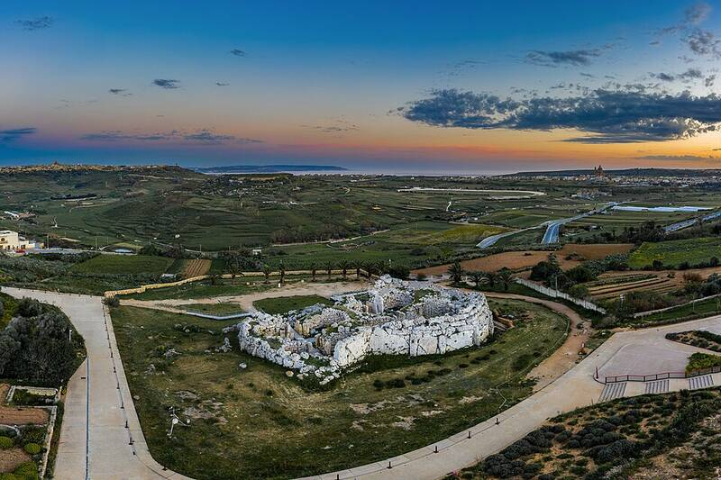

Ġgantija temples
Gozo, Malta

Two megalithic temples from the Neolithic, more than 5,500 years old and older than the pyramids of Egypt. The name means "place of giants": local folklore says a giantess named Sansuna built them. Figurines found there point to a fertility cult. 1
Open in the interactive Watcher
Sources
- Ġgantija Wikipedia